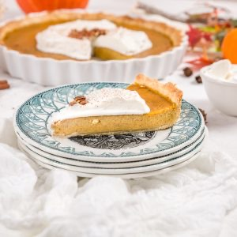

Pumpkin pie ou tarte à la citrouille

Aujourd’hui, je vous retrouve avec la recette de la pumpkin pie (ou tarte à la citrouille en français) que nous avons dévorés et adorés il y a quelques temps déjà et je suis ravie de partager cette recette avec vous.
J’ai bien dû mettre au moins 30 ans avant de me lancer dans cette recette! En effet, l’idée de faire une tarte à la citrouille ne me tentait pas plus que ça… Le fait de servir de la citrouille en dessert ne m’inspirait clairement pas et pourtant je regrette aujourd’hui de ne pas avoir testé plus tôt cette recette de pumpkin pie! C’est en écoutant les avis des uns et des autres sur cette très célèbre tarte que j’ai eu envie de me lancer et j’ai été agréablement surprise par le résultat. Depuis, j’en ai refait plusieurs fois et c’est à chaque fois un succès 🙂 Beaucoup d’entre vous connaissent certainement déjà la pumpkin pie et je ne vous apprends rien en disant que ce dessert est excellent mais pour ceux qui ne savent pas du tout de quoi je parle et qui ont besoin de se laisser convaincre, voici une petite explication sur l’origine de ce dessert. Cette tarte à la citrouille (soit pumpkin pie en anglais) est un dessert préparé traditionnellement pendant Thanksgiving, Noël mais aussi pour Halloween, principalement aux États-Unis et au Canada. Cette tarte est généralement composée d’une garniture à base de citrouille agrémentée d’épices telles que la cannelle, noix de muscade et gingembre et est cuite sur un fond de tarte. Très souvent on trouve du lait concentré sucré dans les ingrédients mais je trouve ça bien trop sucré alors j’ai choisi une version sans. J’ai fais le choix e mettre de la cannelle dans la pâte à tarte ainsi que dans la crème fouettée car mes amies adoooorent ça! Mais c’est totalement facultatif. Si vous en mettez seulement dans la garniture c’est tout aussi bon (mais si vous aussi vous êtes accros à la cannelle ne vous gênez pas). Je vous laisse découvrir tout ça plus bas, si vous connaissez et si vous aimez (ou pas) la tarte à la citrouille n’hésitez pas à partager vos avis, astuces etc dans les commentaires! Moi je vous retrouve très vite (il faut que je vous parle de Bangkok, Chiang Mai mais aussi de l’île Maurice aussi^^ bref on devrait très vite voyager par ici) bonne journée les gourmands!
Enregistrer
Enregistrer
Ingrédients
- Farine - 215g
- Beurre - 130g
- Sel - 1/2 càc
- Eau - 65 ml
- Jus de citron - 1 càc
- Cannelle (facultatif) - 1 càc
- Oeufs - 3
- Jaune d'oeuf - 1
- Sucre brun - 80g
- Sirop d'érable - 100 ml
- Crème liquide (entière de préférence) - 350 ml
- Purée de citrouille - 420g
- Cannelle - 1 càc
- Gingembre moulu - 1 càc
- Noix de muscade - 1 càc
- Crème liquide entière - 150ml
- Mascarpone - 1.5 càs
- Vanille en poudre (ou extrait de vanille) ou cannelle selon vos goûts - 1 càc
Instructions
- Couper le beurre doux froid en petits morceaux
- Dans un saladier, mélangez-le avec la farine de façon à obtenir une texture sableuse (si vous ajoutez de la cannelle, ajoutez-la avec la farine)
- Verser l'eau et le jus de citron de façon à obtenir une pâte homogène
- Former une boule (si trop collante ajouter un peu de farine, si trop friable ajoutez un peu d'eau)
- Filmer la pâte dans du film alimentaire et laissez-la reposer au frais pendant 1h
- Préchauffer le four à 180°
- Dans un saladier, fouetter les œufs et le jaune d’œuf
- Ajouter le sucre et mélanger
- Ajouter la purée de citrouille Astuce: Si vous voulez la faire vous-même préchauffer le four à 180°C Couper la citrouille en deux et la vider Mettre les deux parties de la citrouille face vers le bas sur votre plaque allant au four Cuire 45 minutes, elle doit être toute molle La laisser refroidir côté tranché vers le haut cette fois Prélever la chair en vous servant d'une cuillère, l'écraser à la fourchette et c'est prêt !
- Les épices et mélanger afin de bien les incorporer
- Verser les sirop d'érable puis la crème liquide et mélanger à nouveau jusqu'à l'obtention d'une préparation homogène
- Sortir la pâte du frigo et étalez-la d'un diamètre environ 3-4 cm plus grand que votre moule à tarte
- Déposer la pâte dans le moule et piquez-la à l'aide d'une fourchette
- Verser la garniture dans le fond de pâte
- Enfourner 45 minutes à 180° (attention la cuisson peut varier d'un four à l'autre)
- Laisser entièrement refroidir avant de servir
- Fouetter la crème liquide entière jusqu'à ce qu'elle monte
- Ajouter le mascarpone, le sucre glace et la vanille (ou cannelle au choix)
- Fouetter à nouveau pour bien les incorporer
- Conserver au frais
- Au moment de servir, prenez une part de tarte avec un peu de crème 🙂
Les tips de la communauté
Tarte originale et surprenante qui conquiert les lecteurs skeptiques sur l'utilisation de citrouille en dessert. Les retours sont enthousiates avec plusieurs testeurs pleasantly surprised. Peut s'adapter en version salée.
Astuces
- L'idée d'utiliser la citrouille en dessert surprend mais ravit
- Pour faire la purée de citrouille, pas besoin d'éplucher : enlever les pépins, cuire et passer au mixer
- La peau disparaît naturellement lors du mixage
- Photos alléchantes et ambiance réussie
Variantes suggérées
- Possible en version salée selon les préférences
Ajustements signalés
- dire aussi que la citrouille je l’aime tellement en version salée que je n’en ai jamais pour les dessert !!! (que l’on mange rarement au quotidien)